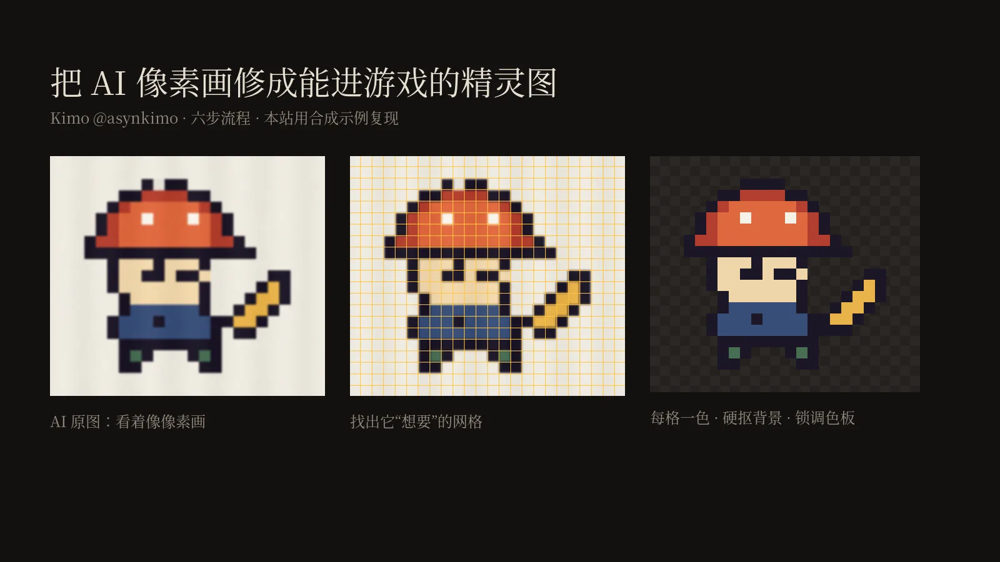
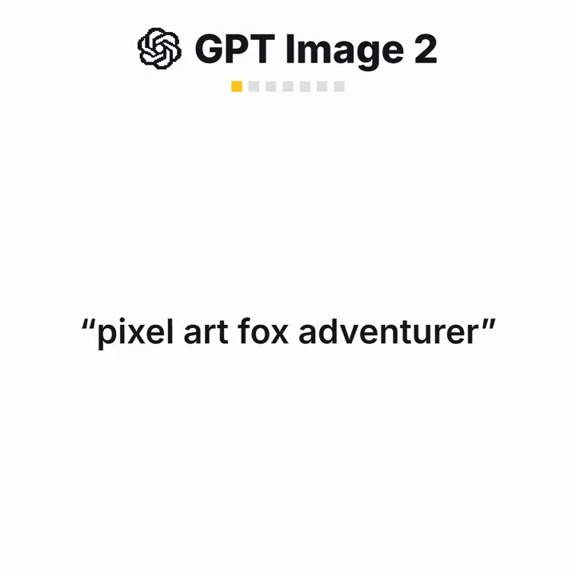
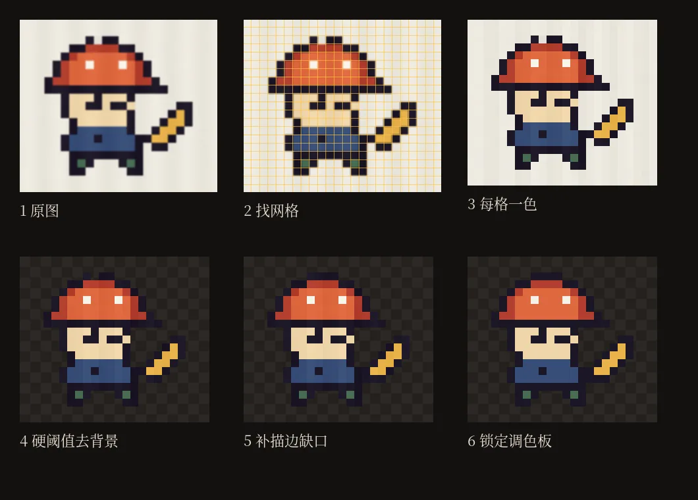
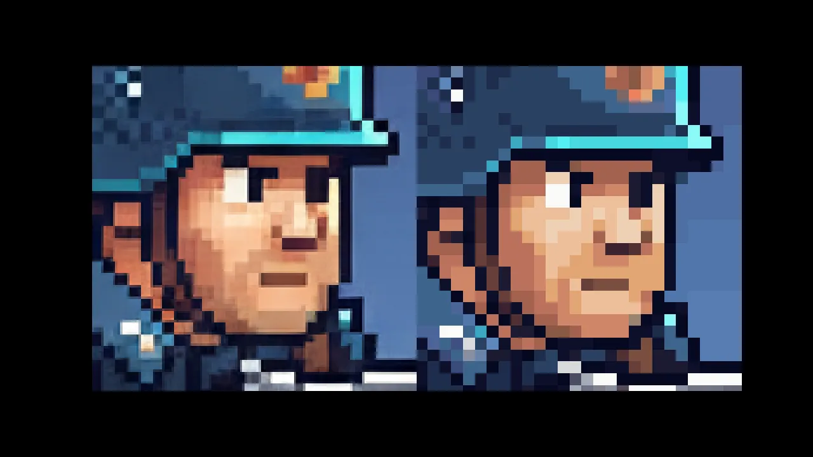

原帖：x.com/asynkimo/status/2114796665307578732（作者：Kimo @asynkimo，2026-10-27 03:09 SGT）

原帖（全文翻译）
怎么把 AI 直接生成的像素画，变成真正能在游戏里用的精灵图
做像素画，永远选基于 Nano Banana 的模型，别选 GPT Image。
> 找出它本来想画的像素网格（链接）
> 按“每格一种颜色”把图重建出来
> 用硬阈值去掉背景
> 把这一步在描边上留下的缺口补上
> 锁定到你游戏的调色板
> 从这一帧干净的图开始做动画或者直接用 SpriteCook 里的 pixel engine 跳过前三步，它会按你选定的精确尺寸来画。
原帖为长帖，附一段 17 秒视频。链接指向 SpriteCook 的免费网页工具 Pixel Grid Detector。
作者在同一串里的补充（原帖，发帖 34 秒后）：
我把“网格修复”写得更详细了，在这里：spritecook.ai/blog/nanobanana-pixel-art-for-games
除此之外作者没有再回复评论。

它在说什么
- AI 画的“像素画”通常是假的。图像模型一般输出 1024×1024 这样的大图，看起来是一格一格的，但这些“像素”并没有对齐到统一的网格上：有的 6 像素宽，有的 7 像素宽，边缘还有半透明的过渡色和细小噪点。业内把这种东西叫 mixels（混合尺寸的伪像素）。
- 放进游戏引擎就会糊。引擎不知道每个“逻辑像素”的边界在哪，缩到目标分辨率时会在边界上插值，结果是一团糊。一位评论者说得很直白：放大看还行，一缩放进引擎就花了。
- 修法是先把网格找回来，再逐格取色。找到“这张 1024 的图其实是一张约 64×64 的像素画放大了 16 倍”这样的事实之后，每个格子只留一种颜色，图就变回真正的像素画。后面三步——硬阈值去背景、补描边、锁调色板——是让它能和游戏里其他素材放在一起。
- “选 Nano Banana，不选 GPT Image”是作者的经验之谈。帖子没给对比数据，视频看起来是在做这组对比（我们没有下载视频，只看了封面帧）。博客里也说这套修法对 Midjourney、DALL·E、Stable Diffusion、Flux 一样适用。
六步拆开看

- 找网格。关键是估出格子大小（往往不是整数）和起点偏移。真像素画的颜色突变只会落在格线上，所以可以试一遍候选格子大小，看哪一种能把大部分边缘“对齐”到格线上。注意别选到真实格子的一半或三分之一，它们也能对齐，要取能解释边缘的最大格子。
- 每格一色。只看格子中心区域，避开模糊的边，取中位数颜色。中位数比平均值好，因为它不会把两种颜色混成第三种。
- 硬阈值去背景。透明度只有 0 和 255 两档，不留半透明边。我们在复现时踩了一个坑：如果按“和背景色接近就删”全图删，角色眼睛里的白色高光也会被删掉；改成从图像边缘往里“漫水填充”，只删和外部连通的背景，问题就没了。
- 补描边缺口。AI 常把轮廓上某一格画得发白，去背景时会被当成背景删掉，轮廓上就出现一个洞。规则可以很简单：一个透明格子左右（或上下）两边都是描边色，就把它补成描边色。但它也会误补：我们的示例里，有一处本来就该留空的一格凹口也被补上了。这一步最好人工看一眼。
- 锁调色板。把每格颜色就近映射到游戏统一的调色板。评论区有人说，这一步平时最容易忘，直到新精灵和游戏里其他素材摆在一起才发现颜色不搭。
- 从干净的帧做动画。先有一张干净的单帧，再去做走路、待机、攻击等动作。SpriteCook 卖的就是这一步（从单帧生成动作序列）。
本站复现：一份 80 行的参考脚本
原帖和博客都没有公开算法或代码，Pixel Grid Detector 是闭源的网页工具。为了确认这套思路确实可行，我们用 Python（NumPy + Pillow）写了一个最小实现：pixel_fix.py（本站原创，MIT，可自由取用）。它依次提供 find_grid、rebuild、cut_background、fill_outline_gaps、lock_palette 五个函数，对应前五步。
在上面的合成示例上（真实格子 37.3 像素，加了高斯模糊和噪点，并故意把一格描边画淡）：
- 估出的格子大小是 37.6 像素，重建出的尺寸正好是 24×21，和原图一致；
- 前景颜色 100% 还原，透明区域 504 格里错 1 格（就是上面说的误补凹口）；
- 故意画淡的那一格描边被正确补回。
这只是合成图上的结果。真实的 AI 输出会更乱：网格可能不是严格等距、局部会有扭曲、背景也未必是纯色。真要用在项目里，建议先用现成工具（例如 Pixel Grid Detector，或评论区提到的 Retro Diffusion Pixel Art Fixer），再拿这份脚本里的思路去理解和排查问题。
from PIL import Image
from pixel_fix import *
raw = Image.open('ai_sprite.png')
s, ox, oy = find_grid(raw) # 格子大小与偏移
sp = rebuild(raw, s, ox, oy) # 每格一色
sp = fill_outline_gaps(cut_background(sp)) # 去背景 + 补描边
sp = lock_palette(sp, MY_PALETTE) # 锁调色板
sp.save('sprite.png')配套博客导读：《把 Nano Banana 2 的 AI 图变成真正的像素画》
作者在回复里给的博客文章发表于 2026-03-19，是 SpriteCook 官网的营销文章，没有开放许可，这里只做转述和短引。

- 提示词怎么写。博客给的示例是“pixel art infantry soldier, side view, 2d game sprite, clean pixel edges, limited color palette, transparent background”。几条经验：明确写 side view 或 front view，否则模型默认 3/4 角度；加上“game sprite”或“2d game asset”；写“limited color palette”或“8-color palette”能让色块更干净；写“32x32”这样的画布尺寸，有时管用，有时被忽略。
- 问题在哪。模型画出来的东西“看起来像像素画，但没有对齐到一致的网格”，到处是亚像素噪点，硬边之间串色。
- 怎么修。用 Pixel Grid Detector 识别网格，再重采样，让每个逻辑像素正好对应一个输出像素；需要时把颜色压到 8/16/32/64 色。导入引擎时用 point（最近邻）过滤。
- 四条建议。提示词只管风格，网格交给后处理（“别在提示词里跟模型较劲”）；用能拿到的最高分辨率生成，网格识别更准；颜色压缩要克制，喜欢模型配色就保留；下载前看一眼网格叠加图，确认识别对了。
Pixel Grid Detector 页面的说明里还有一句：最近邻放大（硬方块）的图识别最稳，经过平滑或双线性放大的图更难判断，结果会不稳定。
评论区要点
- 做视频要共用调色板。@airi_ai_navi 说他们在一张 RTX 3090 上做 AI 像素动画也是类似流程：每格一色、32 色、12 fps，多一步是“从多帧一起建调色板并共用，颜色才不会逐帧闪烁”。被追问时补充：从片段里均匀取 8 帧拼成一张图建调色板；如果片段中途光线变化，就在变化处切开、各用一套调色板（回复）。
- “每格一色就是全部诀窍。”（@jj_kovacs）图像模型偏爱软边和零散的半个像素。另有人说硬阈值去背景“被低估了”（@canveedotapp）。
- 同类工具。有人直接推荐 Retro Diffusion 的免费 Pixel Art Fixer（@XProfessah，这条回复本身也有 24 赞 13 收藏）；有人问“SpriteCook 和 PixelLab 哪个好”，得到的回答是“PixelLab 和 pixel engine”（@luksaa__）。
- 动作参考。可以先用 GPT 生成姿势参考图，再让 SpriteCook 按姿势做动画（@SRGaming2k20）。
- 反对声音也不少。“看着还是很糙”“Nano Banana 出的精灵都长一个样，除了题材几乎没有风格差异”（@opinjonated），也有人说宁可让 AI 出点子、自己从头画。
需要注意的地方
- 作者是 SpriteCook 的开发者，帖子最后一句和视频都在推自家的 pixel engine。“选 Nano Banana 不选 GPT Image”没有给出可复核的对比。
- Pixel Grid Detector 免费但闭源，帖子和博客都没有公开算法或代码仓库；本页的脚本是我们自己写的复现，不代表作者的实现。
- 前三步解决的是“网格”问题，不解决“好不好看”。评论区对 AI 像素画风格同质化的批评，这套流程管不了。
延伸阅读（本站）
- ASCII Magic 与 ascii-sharks：同样是“把连续画面压到一个格子网格上”，只不过格子里放的是字符。
- 木马人：一个人用 AI 做 3D 武侠 ARPG：3D 这边的同类问题——AI 资产要先“修干净”（拓扑、绑骨）才能进游戏。
- 余温：Opus 5.5 + Hi3D 做 3D 海战游戏：减面和压缩，是另一种“让 AI 资产能进引擎”的后处理。
- OpenNana 提示词图库：大量 Nano Banana 提示词。
- Gameplay Atlas：素材之外，玩法原型怎么做。